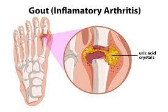

Gout

CAUSES
The human body makes uric acid during the breakdown of chemicals called purines found in certain food and drinks. This normal byproduct goes through the kidneys and exits the body when you pee.
Sometimes the body produces too much uric acid. Or the kidneys can’t do a good job handling it. When the body has high levels of uric acid, or hyperuricemia, uric acid crystals can concentrate in the joints. The sharp, needle-like crystals cause gout. However, many people with higher uric acid levels never get gout.
SYMPTOMS
An episode of gout is called a gout attack. Gout attacks are very painful and can happen quite suddenly, often overnight. During a gout attack, symptoms in the affected joint(s) may include:
- Intense pain.
-
Redness.
-
Stiffness.
-
Swelling.
-
Tenderness, even to light touch, such as from a bedsheet.
-
Warmth, or a feeling like the joint is “on fire.”
DIAGNOSIS
Healthcare providers consider several things when confirming gout:
- Symptoms: The provider will ask you to describe your symptoms, how often they happen and how long they last.
-
Physical examination: Your provider will examine the affected joint(s) to look for swelling, redness and warmth.
-
Blood work: A test can measure the amount of uric acid in your blood.
-
Imaging tests: You may have pictures taken of the affected joint(s) with X-rays, an ultrasound or MRI.
Aspiration: The provider may use a needle to pull fluid from the joint. Using a microscope, a team member can look for uric acid crystals (confirming gout) or a different problem (such as bacteria with infection or other type of crystal).
TREATMENTS
Your healthcare provider may prescribe certain medications to treat gout.